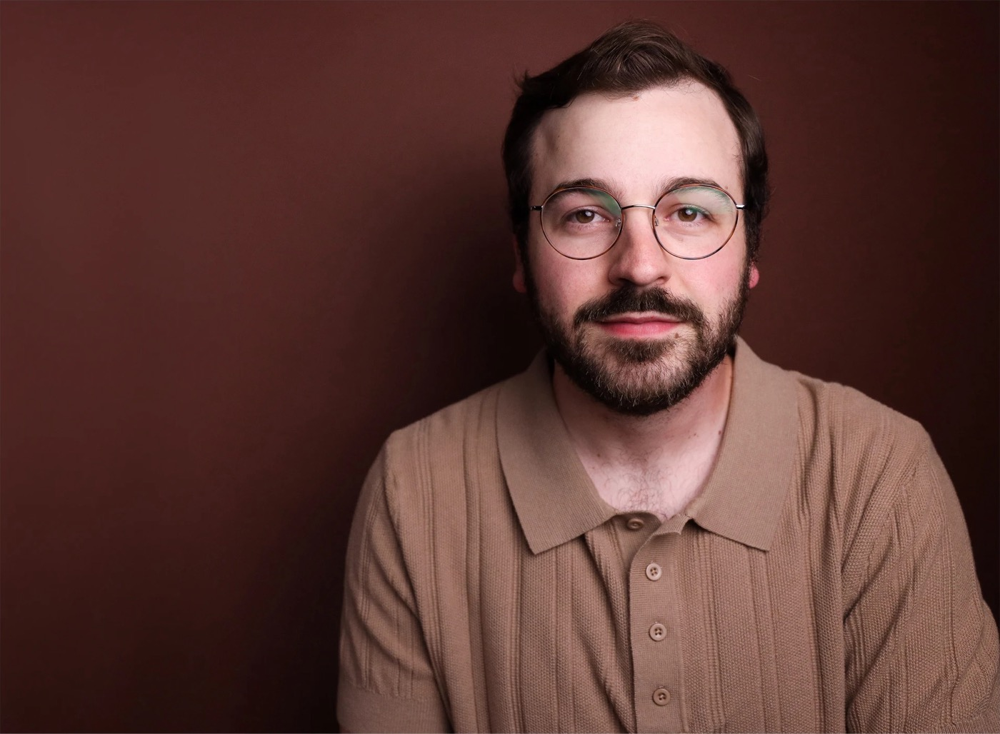

Lead Web Designer · 97 Switch · Open to new work
Web design for hospitality, tech & finance.
I'm David Friedman, lead web designer at 97 Switch, a Chicago digital agency. I work from Tampa, running web projects from first brief to launch and beyond: design, build, client management, and the AI tooling that makes teams faster.
Selected work (10)
Recent launches.
Real briefs.


Approach
One lead,
start to finish.
I own a web project from the first conversation to long after launch. That means the design and build, and also the client relationship: setting expectations, running reviews, coordinating account managers, strategists and developers, and keeping decisions made once so the site ships without rework.
-
01
Discovery and strategy
Every engagement starts with listening. I work with the client, the account manager and the content strategist to agree on business goals, audience, constraints and how success will be measured before any design begins.
- Goals and success measures
- Audience and competitor review
- Sitemap and page jobs
-
02
UX and information architecture
Each page is built around one primary action, whether that is a booking, an inquiry or a lead. Content is outlined before layout so the structure serves the message, not the other way around.
- Wireframes
- Content outline
- Conversion paths
-
03
Visual design
A brand-true design system in Figma covering type, colour and components, followed by key templates presented to the client with clear rationale, so feedback is focused and approvals are efficient.
- Design system
- Key page designs
- Desktop, tablet and phone layouts
-
04
Development
Webflow or WordPress, whichever suits the client's team and goals. Clean class structure, CMS where content changes often, and interactions that earn their place. I can also prototype and build faster with Claude Code.
- Webflow or WordPress build
- CMS structure
- Interactions
-
05
QA and launch
Device, browser and form testing, plus SEO set-up and redirects, run against a launch checklist so go-live is calm and predictable for everyone involved.
- Cross-device QA
- SEO integration
- Launch checklist
-
06
Care and growth
Post-launch maintenance, iteration and training sessions so the client team can edit and extend the site with confidence, and so the site keeps improving after launch day.
- Ongoing maintenance
- Client training
- Iteration
Client management
The relationship is part of the work.
Most of what makes a project go well happens outside the design file. I handle that directly.
Clear from day one
Deliverables, review rounds and dates are agreed up front and revisited as the project moves, so there are no surprises at launch.
One steady point of contact
Regular check-ins, written decisions and honest status updates keep clients and internal teams aligned.
Reviews that lead somewhere
I frame each review around the client's goals and consolidate input, so feedback turns into decisions rather than endless revisions.
AI and systems
Claude Code and AI architecture.
I use Claude Code day to day to build, document and automate, and I design AI systems and the architecture behind them: how models, tools, data and people fit together in a workflow a team can trust and maintain.
Content first
Layout follows the message. Pages are designed around real copy and real photography, never placeholders.
Systems over one-offs
Reusable components, tidy structure and documented conventions keep a site, and an AI workflow, consistent and fast to extend.
Built to be owned
Clients should be able to update their own site without breaking it, and teams should be able to run their own tools, so everything is organised for the people who inherit it.

About
Design, build,
maintain.
I'm the Lead Web Designer at 97 Switch, a Chicago digital agency, working from Tampa. I build and maintain web experiences for small and mid-sized businesses across the U.S., from UX strategy and visual design through development, QA and post-launch care, and I manage the client relationship along the way.
Alongside client work I build with Claude Code and design AI systems and architecture, applying the same discipline to internal tools and workflows that I apply to websites.
Before 97 Switch I led a web design team at Succeeding Small in Colorado Springs, running concept, design and SEO integration and training the agency and its clients on best practice. I studied at the University of Florida, and I'm also a professional actor and a member of Actors' Equity Association.
Experience
- 2022 — Now
Lead Web Designer
97 Switch · Chicago digital agency
Lead design and development of Webflow and WordPress sites across hospitality, finance, real estate, technology and food & beverage, with day-to-day client management and AI-assisted workflows.
- Early 2022
Lead Web Designer
Succeeding Small · Colorado Springs
Led the web design team on client sites, with SEO integration and best-practice training.
Contact
Need a lead web designer?
Let's talk.
Message me on LinkedIn
Tampa, Florida · Available for full-time roles and select projects